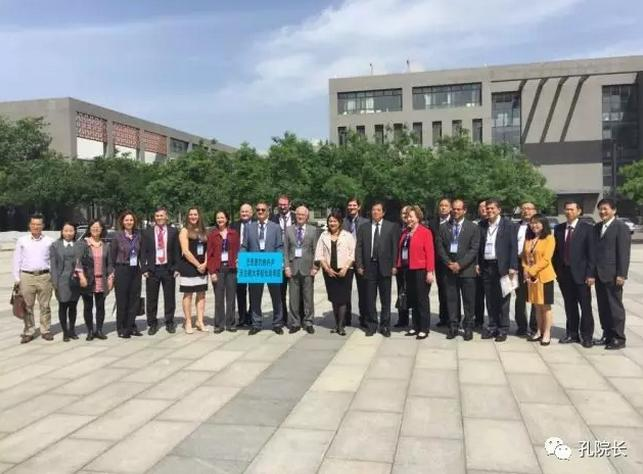
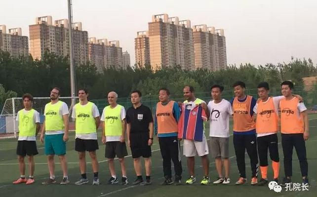
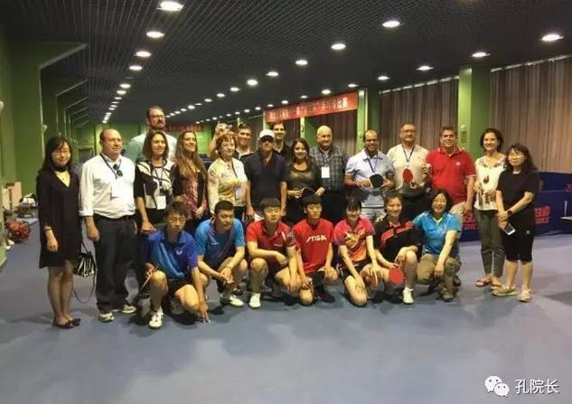
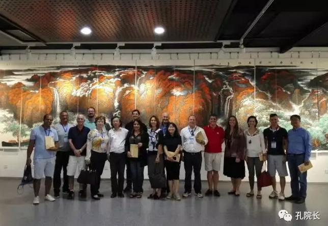
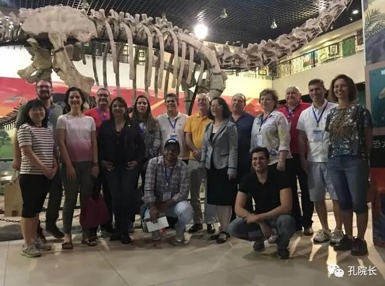
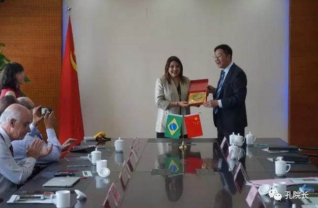
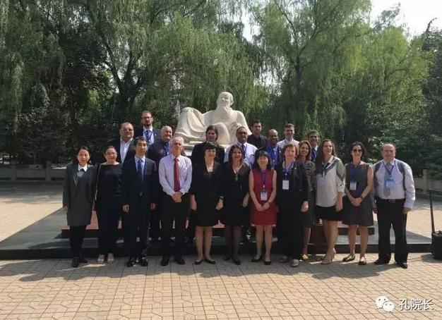
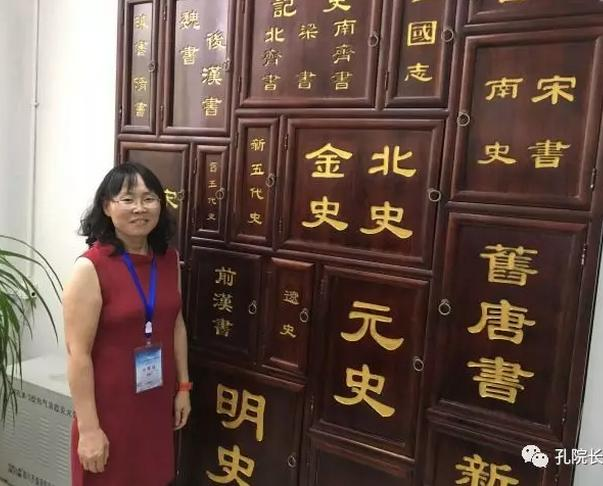

每日一篇——孔院风采/ 巴西孔子学院推动中巴高校交流合作的成功之路【中篇/ 体验感悟】
 534
534
来源：原创 作者：乔建珍
5日上午代表团奔赴此次中国之行的第二站——河北省会石家庄。下午，在河北师大博物馆会议室，由河北省教育厅协调，巴西团与在石的河北省六所高校进行了“河北-巴西高等教育合作交流论坛”第二场对话活动。
河北省教育厅国际处领导、河北师范大学、河北中医学院、河北地质大学、河北医科大学、河北科技大学、石家庄铁道大学参加了此次活动。河北师大副校长刘敬泽代表河北师大致欢迎词，并对河北师大进行了简短的介绍。接下来，河北省教育厅国际处副处长韩文代表教育厅对巴西团的到来表示热烈欢迎。第三个阶段是中巴双方相互介绍。互动环节气氛非常热烈，当下几个学校就达成了合作意向。

河北师大博物馆前双方合影
在石家庄期间，代表团下榻在河北师大校内的酒店，这也是巴西校长们在巴西想都不敢想的事情，他们能这么近距离地了解中国大学校园的点点滴滴。期间恰逢周末，河北师大国际处和河北师大体育学院协调安排代表团利用周末时间进行了体育体验乒乓球体验、武术表演参观、康复训练室的体验。体育学院的课程设置特色、足球场、乒乓球室、武术房及其他教学硬件也给代表团留下了深刻的印象。
6日下午，应巴西大学校长们之请求，中国大学生蛋球儿体育文化公司组织了巴西大学校长与河北师大体育学院本科生的足球友谊，河北师大前书记李建强和巴西代表团年龄最大的戈亚斯联邦大学（Universidade Federal de Goias）65岁的校长奥兰多(Orlando)参加了全程比赛。崭新的足球场地让巴西大学校长们啧啧称赞，中国大学生积极向上的风貌也让他们很感慨。赛后他们纷纷和中方大学生队员合影，并期待他们将来能来巴西留学。

中巴足球友谊赛合影

河北师大体育学院乒乓球体验
在石家庄期间，河北师范大学和维索萨联邦大学（Universidade Federal de Viçosa）就有关师生交流、两校足球合作尤其是双方都非常重视的足球教练培养等签署了框架性协议。这也是中国和拉美大学就足球项目签署的第一个协议。
为进一步了解中国文化，代表团利用周末时间，体验了师大校园的小黄车，参观了河北师大博物馆，了解了河北师大一百多年的历史并有幸遇上聂川老师的中国国画展。并参观了位于河北赵县、距今有1400多年的、全球最古老的石拱桥—-安济桥。之后，来到了有着悠久历史的柏林禅寺。悠久的历史、多元文化使急于更多了解中国灿烂文化的巴西朋友非常满足开心。
体验小黄车

参加聂川中国画展
为更多地了解中国大学硬件设计，代表团参观了河北地质大学的货币博物馆和地球博物馆。为欢迎不远万里而来的巴西大学朋友，货币博物馆馆长亲自上阵，为大家详细讲解了中国货币的历史及中外货币交流的故事，通过参观，让大家系统了解了有关的知识和故事。走进地球博物馆，学校外事处处长廖亦斌全程为代表团讲解了我们生存的地球的内外历史、知识、矿藏、火山、地形地貌。
走进四五楼的恐龙博物馆，令人非常震撼地我们看到了考古系师生用了八年时间挖掘了近半个山的考古成就—由百分之70多的恐龙化石组成的恐龙骨骼标本，这也是泥河湾考古工程一个主要成绩。 同时在这里我们看到了各式各样的恐龙、恐龙蛋，了解到了神秘地球在冰河季前后恐龙的活动情况。

地质大学地球博物馆
除了拜访参观大学、举行大学间的对话外，代表团一行还拜访了河北省教育厅，了解中国的教育体系。河北省教育厅副厅长王廷山向代表团介绍了河北省的基本情况和河北教育的概况，指出河北省今后的五年及更长的时间所面临京津冀协同发展、河北雄安新区建设、“双一流”大学建设等重大历史机遇及教育发展新理念，回顾了河北和巴西的交往历史，希望巴西大学和河北的大学能够进一步加强合作。
之后，巴西团团长罗莎娜（Rossana）博士介绍了代表团此次访华的目的,对河北省教育厅给予的盛情款待表示诚挚的谢意。代表团一行也就建立首所拉美中医孔子学院、开展师资培训、师生交流等领域表达了强烈的合作意愿。在河北教育厅领导及中巴大学校长约30人的见证下，河北中医大学和巴西戈亚斯州联邦大学、巴西大学科因布拉集团和河北师范大学、河北北中医大学和河北地质大学先后签署了三语协议，场面极其隆重热烈。

与河北省教育厅互换礼物
河北中医学院和巴西大学科因布拉集团签约
8日下午，代表团来到了此次中国之行的重要一站河北中医学院，受到了校长孔祥骊院长等的热烈欢迎。孔院长向巴西客人们介绍了学校的历史和中医药在世界上的发展现状，希望通过这次交流访问，加深双方的了解和沟通，为今后进一步开展交流与合作创造一个良好的开端。为深入了解中医学院和中医，代表团一行15人参观了河北中医学院的中医典籍图书馆、名医堂及中医药博物馆。随后到河北省中医院进行参观体验。
古老的中医技术、现代化大大楼、精心安排的参观路线让巴西大学校长团感到震撼并啧啧称赞。由多台机器组成占地1000平米的煎药室、传统的中药房、流水的送药仪器、智障儿童多元治疗室、高达17 层楼的中医历史浮雕、楼顶小小中药园、针灸按摩体验等等，一切的一切都让对中国传统医药抱有极其好奇心的巴西团称羡不已。

河北中医学院扁鹊像前合影
作者简介：
乔建珍，河北师范大学外语学院副教授
1999年开始学习葡萄牙语，自2012年4月至今任巴西里约热内卢天主教大学孔子学院中方院长。

【下篇/ 合作共赢 链接：http://wz.chinesecio.com/?p=13745】